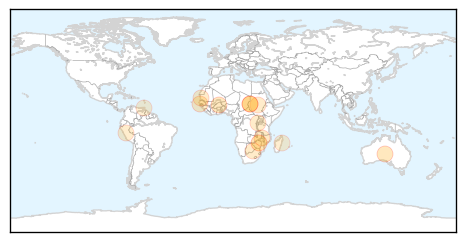

Yellow Fever
30-Day Web Trend
2 alerts, 0 warnings

30-Day Twitter Trend
0 alerts, 0 warnings

Article Locations
Article Confidences

Top Articles:
- 0.993
- Haemorrhagic Fever: UN assessment response team arrives in Sudan
- 0.872
- Australian Department of Foreign Affairs and Trade
- 0.770
- Australian Department of Foreign Affairs and Trade
- 0.758
- Australian Department of Foreign Affairs and Trade
- 0.697
- Australian Department of Foreign Affairs and Trade
- 0.675
- Australian Department of Foreign Affairs and Trade
- 0.635
- Australian Department of Foreign Affairs and Trade
- 0.624
- Australian Department of Foreign Affairs and Trade
- 0.623
- Australian Department of Foreign Affairs and Trade
- 0.615
- Australian Department of Foreign Affairs and Trade
- 0.587
- Australian Department of Foreign Affairs and Trade
- 0.576
- Australian Department of Foreign Affairs and Trade
- 0.544
- Australian Department of Foreign Affairs and Trade
- 0.528
- Australian Department of Foreign Affairs and Trade
Top Tweets:
-
No tweets found for Nov 04, 2015
Influenza
30-Day Web Trend
1 alerts, 0 warnings

30-Day Twitter Trend
2 alerts, 0 warnings
Article Locations

Article Confidences

Top Articles:
- 0.996
- Influenza season is coming
- 0.959
- CDC hopes for more effective flu shot
- 0.931
- Free FluMist clinic for children Sat. Nov. 7 in Affton
- 0.848
- Cape Breton's first confirmed case of the 2015 flu
- 0.830
- ESCMID and ESWI call on EU health services to use hospital flu vaccination uptake rankings
- 0.806
- Today's stories from newspapers in Caledon
- 0.806
- Today's stories from newspapers in Caledon
- 0.806
- Today's stories from newspapers in Caledon
- 0.806
- Today's stories from newspapers in Caledon
- 0.806
- Today's stories from newspapers in Caledon
- 0.806
- Today's stories from newspapers in Caledon
- 0.751
- November 4, 2015 Archives
- 0.751
- November 4, 2015 Archives
- 0.751
- November 4, 2015 Archives
- 0.503
- Sinovac to Participate in Morgan Stanley Asia Pacific Summit
Top Tweets:
-
No tweets found for Nov 04, 2015